Instalación y configuración de Windows Server 2019
1.- Creación de la MV (máquina virtual).
Dentro del software de virtualización crearemos una máquina virtual llamada "Server2019- fjcg2122" ,destinada a la instalación del sistema Windows Server 2019 cuya versión de evaluación en formato ISO se puede descargar del siguiente enlace. Asigna los siguientes recursos hardware a la MV:
Una vez descargada la iso de Windows Server 2019, nos dirigiremos a nuestra máquina virtual y le añadimos estas características:
• Un único disco duro virtual con 100 GB de capacidad.
• Memoria RAM: 2 GB al menos si tu equipo tiene 4 GB (si tienes más RAM, puedes utilizar más en la MV, se recomienda usar 4 GB en la MV si tienes 8 GB o más en tu máquina anfitriona).
Seguimos los siguientes pasos:
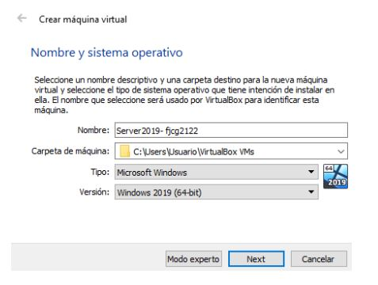Añadimos el tamaño de memoria según tu equipo puede soportarlas.
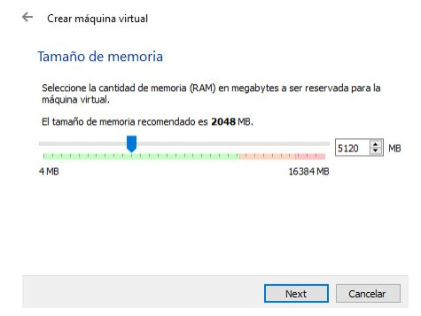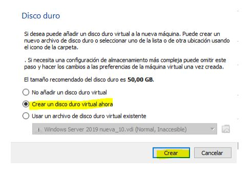
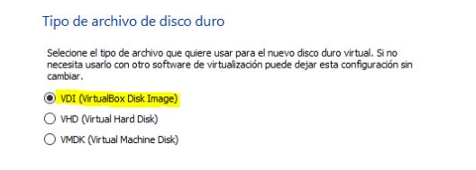
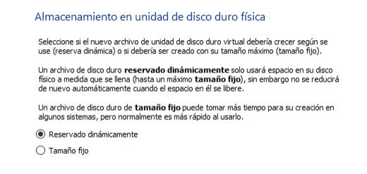
Ingresamos un tamaño de 100GB para nuestra máquina virtual.
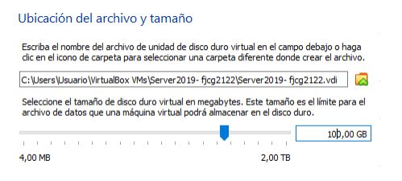Ya tenemos creada la máquina virtual, le damos a Iniciar
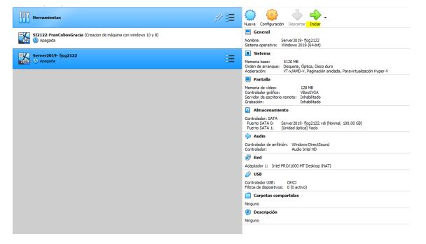2.- Instalación de Windows Server 2019.
nstala Windows Server 2019 teniendo en cuenta que durante su instalación tendrás que realizar operaciones relativas al particionado del disco duro virtual creando dos particiones: una partición de 80 GB donde se instalará el sistema y una partición de 20 GB que se utilizará para datos
Añadimos la ISO de Windows Server 2019
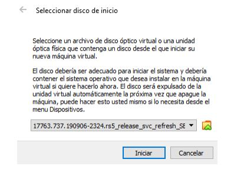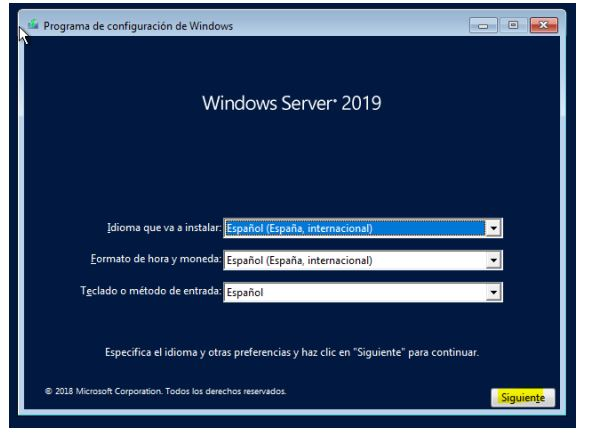
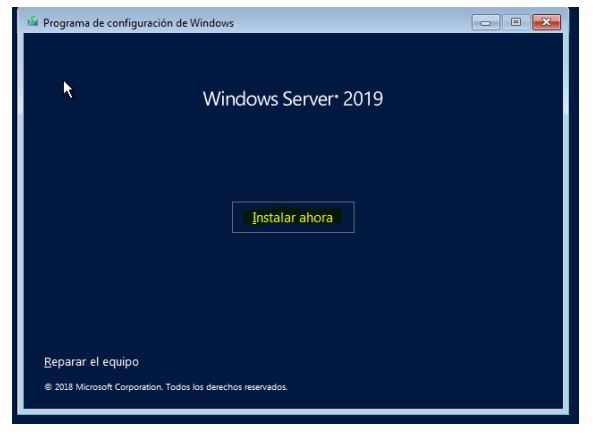
Escogemos una versión para instalar (La segunda para tener entorno gráfico)
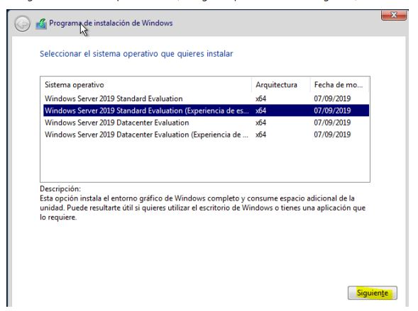Aceptamos los términos de licencia
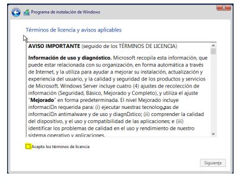Elegimos la opción personalizada para realizar las particiones siguientes:
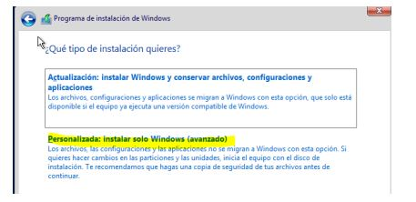Le damos a nuevo para crear una particion
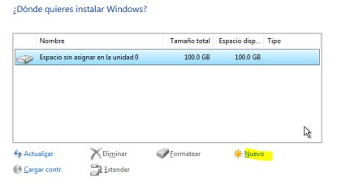Introducimos 80GB (80000MB) una partición de 80 GB donde se instalará el sistema y una partición de 20 GB que se utilizará para datos
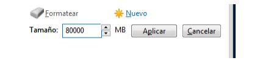Aceptamos
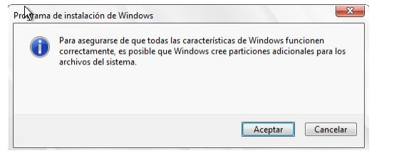Podemos observar que las particiones se han creado correctamente
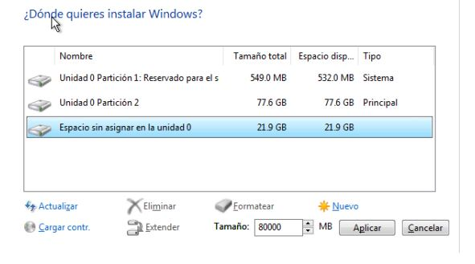Ya comenzará con la instalación de Windows Server 2019
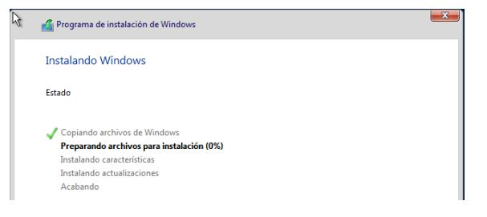Como clave al usuario Administrador puedes ponerle Ab_12345.
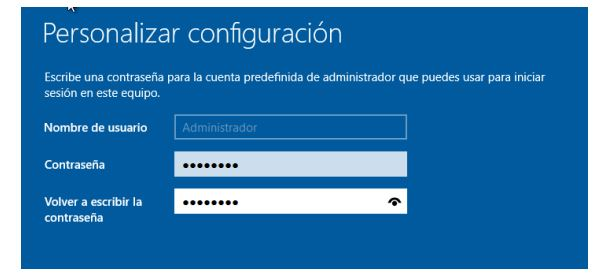3.- Configuración inicial del servidor.
1.- Configurar las funciones de red. Abre una consola ejecutando CMD y comprueba ejecutando ipconfig /all la configuración de red actual de la máquina virtual.
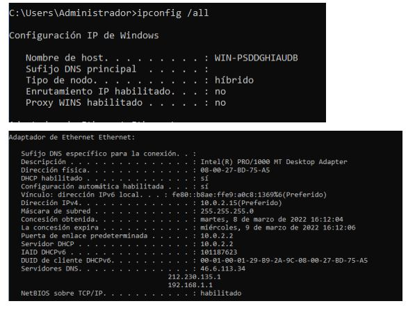Apaga el servidor y accede en VirtualBox a Máquina
Configuración… y elige Red. Observarás que, si no has cambiado el modo de funcionamiento de la tarjeta de red, esta se encuentra en modo NAT. En dicha pantalla, elige “Conectado a: Adaptador Puente”.
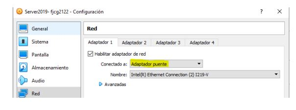Arranca la máquina virtual y vuelve a ejecutar CMD e ipconfig /all para comprobar la configuración de red. Observarás que ha cambiado y que has obtenido una dirección IP dentro de la red creada por el router al que está conectado la máquina física. Probablemente tu IP sea del tipo 192.168.0.x o 192.168.1.x.
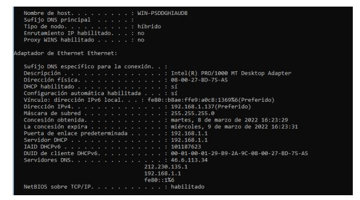Observando dicha configuración, vamos a hacer que la dirección IP del servidor sea estática y vamos a asignarle los mismos valores que nos ha dado el servidor DHCP de nuestra red física
Para ello realizamos los siguientes pasos:
En el menú de contexto que aparece, elegimos Abrir el Centro de redes y recursos compartidos. (Hacer click derecho sobre el icono marcado)
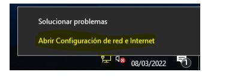En el apardado Ethernet le damos click sobre Cambiar opciones del adaptador
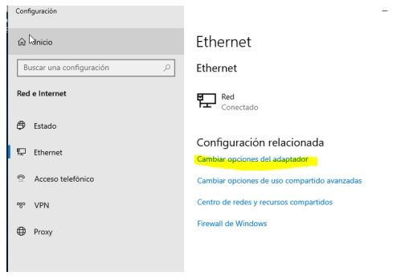Hacemos click derecho sobre Ethernet, Propiedades
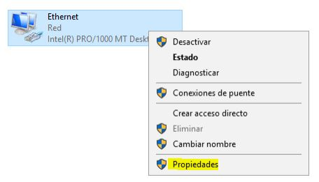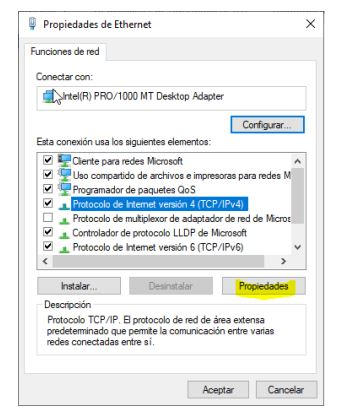
Añadimos una dirección estática
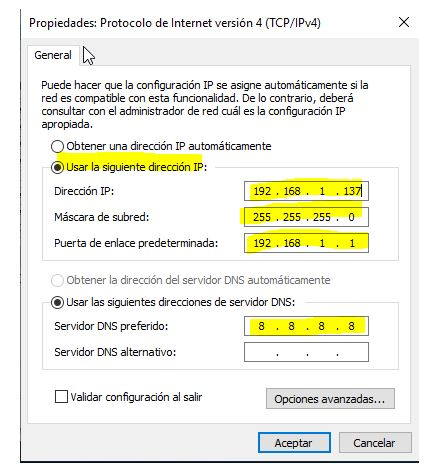2.- Asignar un nombre representativo al servidor.
Debes cambiar el nombre del servidor para que sea server2019-iniciales del alumno
Para ello nos vamos al explorador de archivos, hacemos click derecho sobre Este equipo, Propiedades.
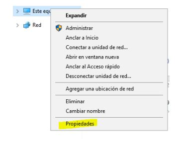Le damos a Cambiar configuración
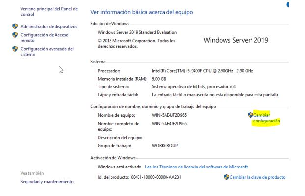Podemos observar el nombre completo del equipo, le damos a Cambiar…
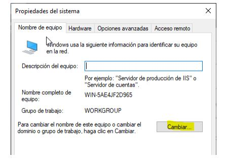Introducimos un nombre para el equipo y aceptamos
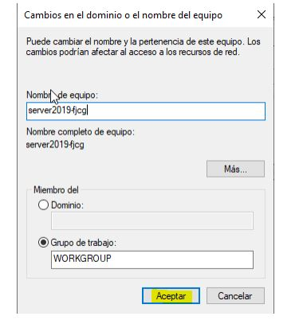Para observar los cambios debemos reiniciar la máquina
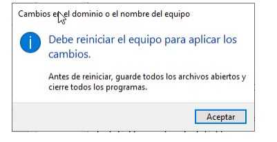